#1:
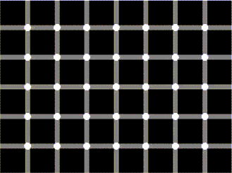
Count the black dots!!! (from LiquidGeneration.com)
#2:
 How many legs does this elephant have? (from LiquidGeneration.com)
How many legs does this elephant have? (from LiquidGeneration.com)
#3:
 The squares marked A and B are the same color.
Proof...
(from LiquidGeneration.com)
The squares marked A and B are the same color.
Proof...
(from LiquidGeneration.com)
#4:
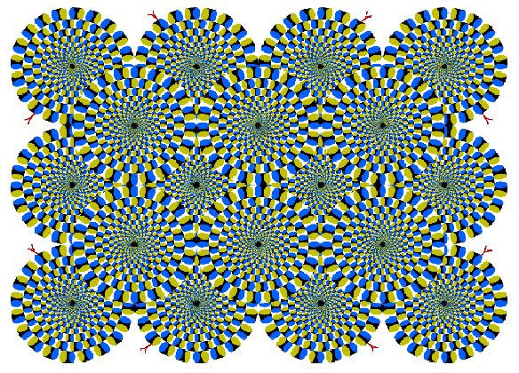
This one is really weird!!! (from ritsumei.ac.jp)
#5:
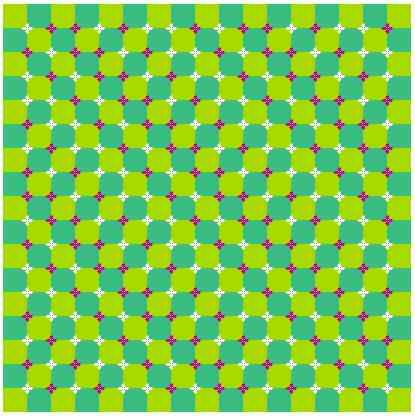
Move your head back and forth to make a cool wave. It works best from far away. (from ritsumei.ac.jp)
#6:
 The vertical bars are the same length!!!
Proof...
(from torinfo.com)
The vertical bars are the same length!!!
Proof...
(from torinfo.com)
#7:
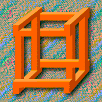
This crate is totally impossible to build, as you can see if you look closely. (from torinfo.com)
#8:
 These lines are perfectly staight!!!
Proof...
(from eyetricks.com)
These lines are perfectly staight!!!
Proof...
(from eyetricks.com)
#9:
The center circles are exactly the same size!!!
Proof...
(from eyetricks.com)
#10:
 The pink squares in each diagonal stripe are the same shade of pink!
Proof...
(from eyetricks.com)
The pink squares in each diagonal stripe are the same shade of pink!
Proof...
(from eyetricks.com)
#11:
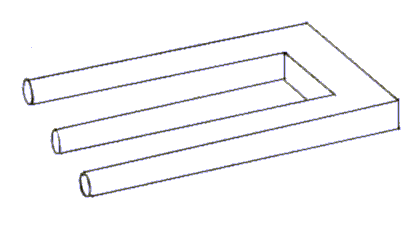
How many prongs does this fork have? (from eyetricks.com)
#12:
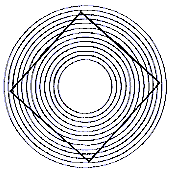
The diamond is perfectly straight!!!
Proof...
(from eyetricks.com)
#13:
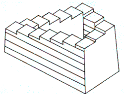
These steps keep on going and going and going... and always up! (from eyetricks.com)
#14:
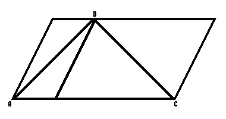
Line A-B is the same length as B-C!
Proof...
(from eyetricks.com)
#15:
 The three blue squares are perfectly straight!!!
Proof...
(from eyetricks.com)
The three blue squares are perfectly straight!!!
Proof...
(from eyetricks.com)
#16:
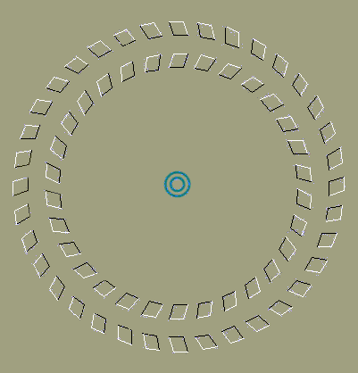
Stare at the center and move your head closer and farther away from the screen. (from ebaumsworld.com)
#17:
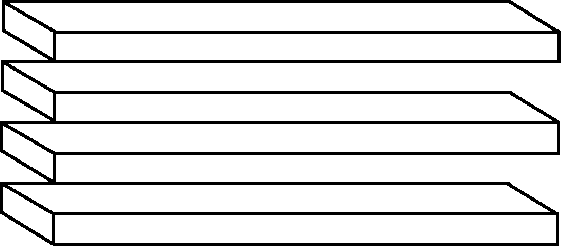
How many shelves are there? (from eyetricks.com)
#18:
 The top lines of each shape are the same length!!!
Proof...
(from eyetricks.com)
The top lines of each shape are the same length!!!
Proof...
(from eyetricks.com)
#19:
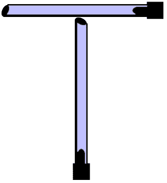
These two bars are the same length! (from eyetricks.com)
#20: Read the following paragraph:
Aoccdrnig to rscheearch at Cmabrigde Uinervtisy, it deosn't mttaer in waht oredr the ltteers in a wrod are, the olny iprmoetnt tihng is taht the frist and lsat ltteer be at the rghit pclae. The rset can be a toatl mses and you can sitll raed it wouthit a porbelm. Tihs is bcuseae the huamn mnid deos not raed ervey lteter by istlef, but the wrod as a wlohe.
#21:
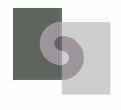
The two curved sections are the same shade of gray!!!
Proof...
(from web.mit.edu)
#22:
 There is only one shade of gray in this picture!!!
Proof...
(from web.mit.edu)
There is only one shade of gray in this picture!!!
Proof...
(from web.mit.edu)
#23:
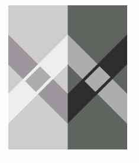
The two small rectangles in the center are the same shade of grey!!!
Proof...
(from web.mit.edu)
#24:
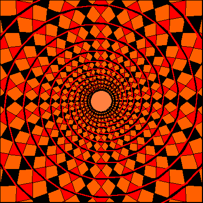
Does this look like a spiral? In reality it is a bunch of concentric circles! (from psycharts.com)
#25:
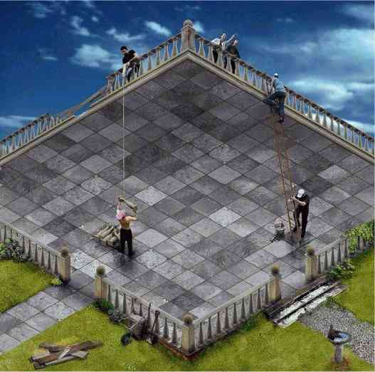
Does this picture make sense? (from psycharts.com)
#26:
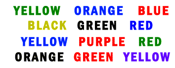
Read the color, not the word. (from psycharts.com)
#27:
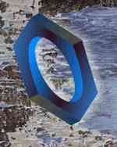
Look at this impossible nut. (from psycharts.com)
#28:
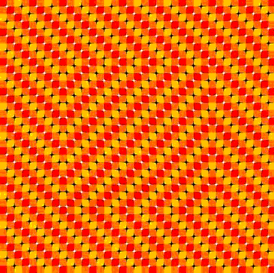
Scroll up and down and watch the center square move. (from ebaumsworld.com)
#29:
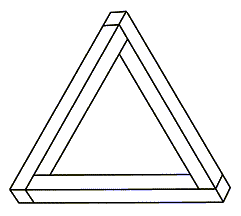
Look at this impossible triangle. (from psycharts.com)
#30:
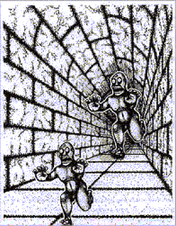
These two monsters are the same size! (from psycharts.com)
#31:
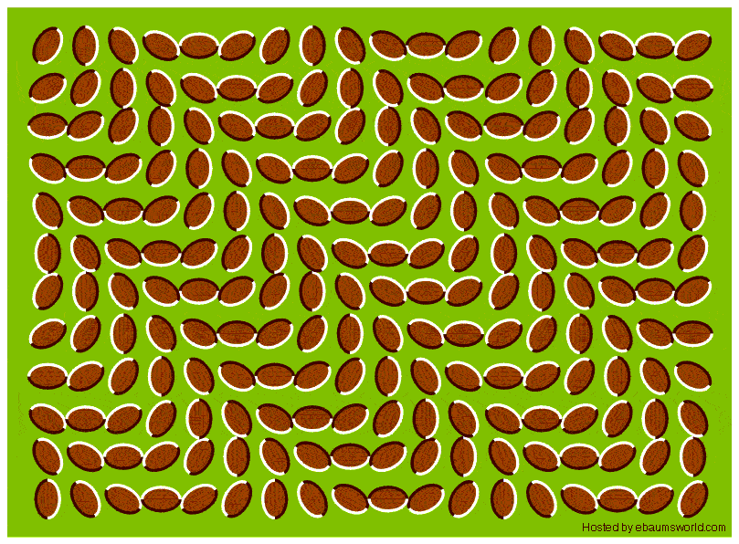
Look at these walnuts! (from ebaumsworld.com)
#32:
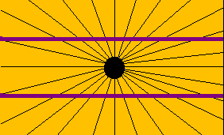
The purple lines are perfectly straight! (from ebaumsworld.com)
#33:
Are these arrows facing inwards or outwards?
I don't get it...
(from ME!!!)